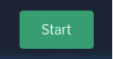

KCD Kerala 2024
Containers 101 Workshop Guide
Initial Setup
Please connect to red.ht/kcdkerala-workshop and start the environment.
Click at the bottom right corner -> 
The environment will take 3-4 mins to spin up, so please be patient.
Once the environment is initialized, you can access the Linux terminal on the left side of the screen.
We will do the workshop steps in this terminal for 30-45 minutes.